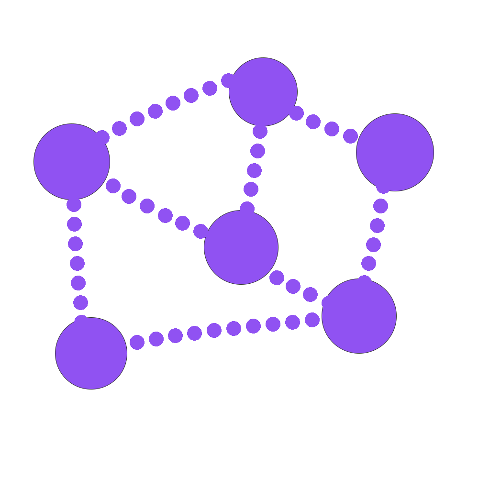

A graduate BSc (Hons) Computer Games Development student from the University of Westminster.
An adventurous individual seeking to implement existing skills in programming, creativity and 3D modelling to a graduate role in the games industry or within related field.
Technical Skills
Competant programming skills in C++, C#, Java, HTML5, CSS and Javascript
Game Engine knowledge includes both Unity and Unreal Engine 4
Efficient in 3D Modelling and Animation software (Maya and Blender)
Excellent abilities using Image Manipulation Software (Photoshop, Illustrator)and Graphic Design
BSc(Hons) Computer Games Development
Graduated with an Upper Second-Class degree (2:1) from the University of Westminster (London, England)
Top Modules include:
3D Interactive Media Development (87%)
3D Graphics Programming (77%)
Applied Maths and Physics (77%)
Thesis titled "Remastered and Replayed", focuses on why companies choose to reproduce video games for the benefit of both the players and the games industry
Competed in the Adobe Certified World Championship (June 2017) - Placed in the top 20 for Uk and Ireland for skills in Photoshop
President of the Games and Creative Society - University of Westminster
Hosted weekly eventsat the University offering both friendly and competitive tournament evenings, alongside supporting fellow students with their games development projects and running occasional game jams which has strengthened my leadership and communication skills
Held events to raise money for charity with other societies
Successful in promoting inter-Uni esports with the presidents of other university's game societies. An example of this would be the King of the Capital Games Tournament which was hosted by 4 universities, including Westminster and included tournaments in League of Legends, CSGO, Overwatch and Tekken 7
Pioneered varsity e-sports so that gaming could be recognized as part of the main sports events

Student/Digital Ambassador and Course Representative
Developed excellent communication skills through delivering tours around the university for new and potential students. Supported University events to show people around or to distribute promotional materials
Listened to other students on the course and provided feedback to the student body to improve the course for students in the future
Responsible for being an advocate for the use of technology in conjunction with the University to enhance student experience by encouraging them to integrate technology in their learnin
BTEC Level 3 National Diploma Games Development
Achieved a Distinction, Merit, Merit (DMM) from Canterbury College (Kent, England)
Modules: Concept Art, 3D Modelling, Games Industry Management, Sound in Games
Acted as voluntary class representive
Hobbies and Interests
Passion for playing video games and video game media (Gamasutra, Games tm)
Personal projects - Enjoy making and printing 3D models, wig crafting and baking
Favourite Games: Runescape, Final Fantasy series, Stardew Valley and Rollercoaster Tycoon
Professional and Home bartender: Interested in cocktail mixology and creation, 6 years bartender experience and hosted live cocktail masterclasses